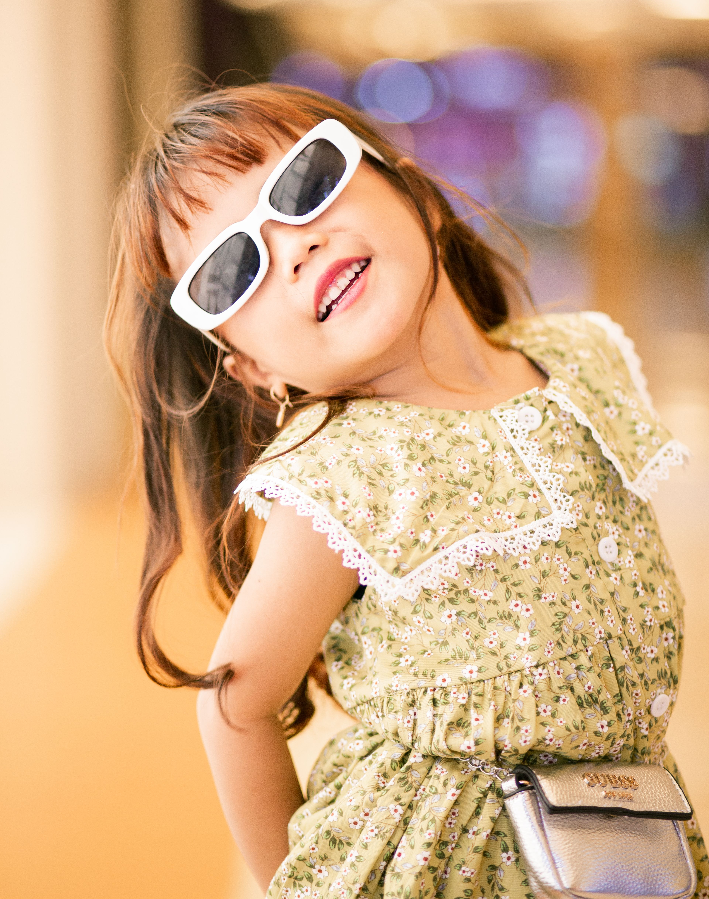
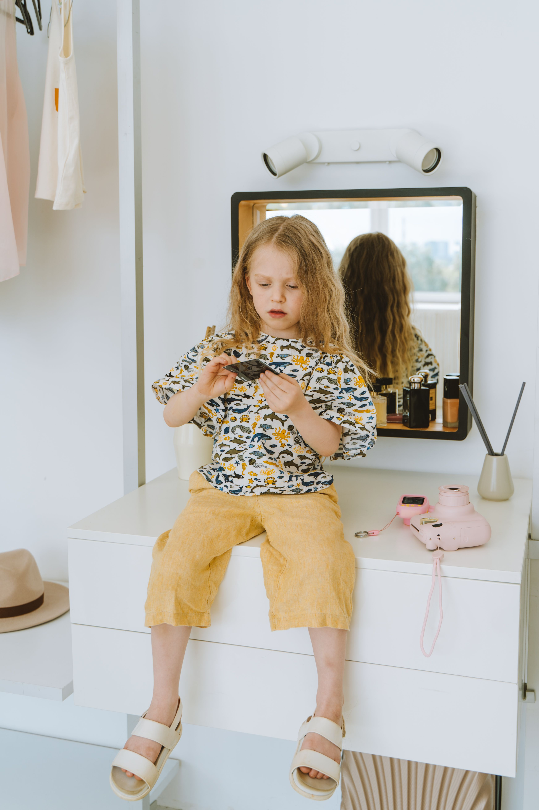

Welcome to Our Kids heaven
Welcome, kids! Are you ready for some fun, jokes, and laughter? You have just found one of the funniest places on the internet! Are you tired of adults telling you to clean your room, eat your vegetables, or stop making funny noises? Then you are in the right place! Sit back, relax, grab your favourite snack, and get ready for lots of fun!
- Jokes so bad, they'll make your cat roll its eyes!
- True (and totally made-up) adventures of extreme nonsense.
- Find out which slice of pizza matches your personality!
- Can you try not to laugh for 30 seconds?
Browse stories
No stories in this category yet.
Maya's Beautiful Dress

The morning sun was shining through the big glass windows of the shopping mall. The floor was clean and shiny. Seven-year-old Maya was very happy. She felt like a fashion model walking on a runway. Maya was wearing a beautiful light green dress with tiny flowers on it. The dress had a big collar with pretty white lace around it. It also had small white buttons in front. The dress looked lovely and old-fashioned. Her mother took out her camera and said, "Maya, please stand still so I can take your picture!" But Maya was too excited to stand still. She tilted her head back and gave a big, cheeky smile. She was also wearing her favourite white sunglasses. They were big and had a cool shape. The sunglasses made her look stylish and smart. Maya also carried a small, shiny silver handbag around her waist. The bag was very small, but she loved it because it made her outfit look special. "Are you taking my picture or sleeping, Mum?" Maya asked with a giggle. Her mother laughed as Maya showed her beautiful, wide smile. It was a wonderful day for Maya. She felt happy, beautiful and confident in her lovely dress.
What We Learn
- Always be happy and confident.
- Take good care of your clothes.
- Enjoy spending time with your family.
- Be yourself and let your personality shine!
Questions?
- How old was Maya?
- Where did Maya go with her mother?
- What colour was Maya's dress?
- What colour were her sunglasses?
Jasmine Show

The morning sun shone through the big glass windows of the shopping mall. Its warm light made the shiny floor look golden. But for seven-year-old Leo, the shopping mall was not just a place for shopping. It was his own fashion runway.
He stood in the middle of the walkway and posed like a famous model. Leo was wearing a beautiful light green shirt with tiny pictures of leaves and flowers. The shirt had a big collar with a neat white line around it. It also had small buttons down the front. His shirt looked simple, smart and stylish. Leo was very proud of his lovely outfit.
| Dress | Colour | Price | Size |
|---|---|---|---|
| Eye glasses | Orange | Ksh 25000 | 7-8 years |
| Khaki short | Blue | Ksh 20000 | 7-8 years |
| Brouse | Checked | Ksh 15000 | 7-8 years |
| Shoes | Yellow | Ksh 10000 | 7-8 years |
his mom called out, adjusting her camera lens."Leo, hold still for just one second!" Instead of holding still, Leo tilted his head back with a cheeky, unstoppable grin. Perched on his nose was the ultimate statement piece: a pair of thick, rectangular white sunglasses with retro retro-cool vibes. They added an unmistakable edge, contrasting perfectly with the soft tones of his shirt. Slung cross-body over his shoulder was a sleek metallic silver mini-bag—not quite big enough for a juice box, but far too stylish to leave at home. "Are you taking the picture or taking a nap, Mom?" Leo giggled, tilting his head further and flashing a wide, toothy smile.
James and His Favourite Car
James was a seven-year-old boy who lived in Nakuru, Kenya. He loved cars very much. Every morning, he watched cars, buses and matatus passing along the road near his home. His favourite car was a big red Toyota Land Cruiser. He loved it because it was strong, beautiful and could travel on rough roads. His father told him that many people in Kenya use Land Cruisers to travel to villages, farms and national parks. One Saturday, James and his father visited a car show in Nairobi. James was very excited when he saw a shiny red Land Cruiser. He ran towards it and shouted, "Wow! That is my dream car!" The car had big black tyres, bright headlights and comfortable seats. James imagined driving it through the beautiful landscapes of Kenya. He imagined visiting Maasai Mara, seeing elephants in Amboseli and enjoying the beautiful views of Mount Kenya. His father smiled and said, "James, if you work hard, study well and become a responsible person, you can achieve your dreams." James promised to work hard at school. He wanted to become an engineer and design wonderful cars one day. That evening, James drew a picture of his favourite red Land Cruiser and placed it beside his bed.
What we Learn
Always have a dream. Work hard to achieve your goals. Listen to your parents and teachers. Believe in yourself!Questions
What was James's favourite car? Which town did James live in? Where did James and his father go on Saturday? Name two places James wanted to visit. What did James want to become when he grew up?Michael and His Pet Dog
Michael was an eight-year-old boy who lived in Kericho, Kenya. He loved animals very much. His favourite animal was a dog. One day, his father bought him a small brown puppy as a birthday present. Michael was very happy! He named the puppy Bingo. Bingo had soft brown fur, a long tail and two bright eyes. He loved running around the garden and playing with a small red ball. Every morning, Michael gave Bingo fresh water and food before going to school. When he returned home, Bingo would run towards him, wagging his tail happily. One Saturday morning, Michael took Bingo for a walk with his father. They walked along a beautiful path near their home. They saw green tea farms, colourful flowers and many birds singing in the trees. Suddenly, they heard a small kitten crying near a bush. The kitten looked hungry and scared. Michael gently picked it up and took it home. He gave it some milk and a warm place to rest. Bingo looked at the kitten and wagged his tail. Soon, they became good friends. Michael was very proud of his dog. He learned that animals need love, food, water and care. From that day, Michael promised to be kind to all animals.
What We Learn
- Love and care for animals.
- Always give pets clean water and food.
- Be kind and helpful to others.
- Treat animals gently and with respect.
Questions
- Where did Michael live?
- What was the name of his pet dog?
- What colour was Bingo?
- What did Michael find near the bush?